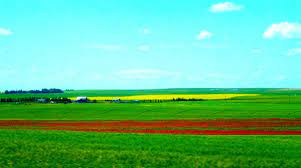

"Nature" refers to the phenomena of the physical world, and also to life in general. ... The term is often
refers to the "natural environment" or wilderness—wild animals, rocks, forest, beaches, and in general areas
that have not been substantially altered by humans, or which persist despite human intervention.
It underpins our economy, our society, indeed our very existence. Our forests, rivers, oceans and soils
provide us with the food we eat, the air we breathe, the water we irrigate our crops with. We also rely on
them for numerous other goods and services we depend on for our health, happiness and prosperity

Emerson says that nature is beautiful because it is alive, moving, reproductive. In nature we observe growth
and development in living things, contrasted with the static or deteriorating state of the vast majority of
that which is man-made, Everything humans have needed to survive, and thrive, was provided by the natural world around us: